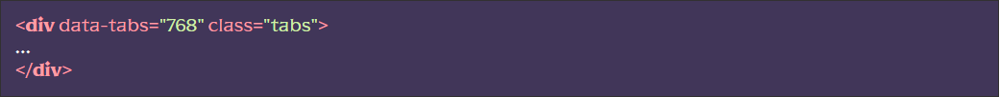

Основні можливості
- Використання безлічі блоків з табами
- Відкриття потрібного таба з хешу
- Перетворення табів на спойлери на вказаній ширині екрана (зручно для адаптива)
- Можливість анімованого відкриття табів
- Семантика
Підключення функціоналу
[HTML] У потрібному місці викликати сніпет tabs (класи замінити на потрібні). Або вручну створити структуру із відповідними дата-атрибутами. Зверніть увагу, що додавання класу _tab-active, для заголовка таба зробить таб активним (відкритим)
Приклад блоку з трьома табами:
[JS] У файлі js/app.js розкоментувати рядок flsFunctions.tabs();
[SCSS] (не обов’язково) Якщо ви хочете одразу подивитися на роботу табів та залишили класи запропоновані сніпетом, ви можете розкоментувати рядок @import “base/tabs”; у файлі src/scss/base.scss це підключить базові стилі, їх можна відредагувати під свої потреби.
Використання функціоналу
Перетворення табів на спойлери
Для того, щоб таби перетворювалися на спойлери, необхідно для елемента з атрибутом data-tabs вказати значення ширини екрана нижче якої відбудеться перетворення:
У момент перетворення, до об’єкта з атрибутом data-tabs додасться клас _tab-spoller, яким можна змінити стилі для нового представлення табов-спойлеров.
Відкриття потрібного таба по хешу
Якщо є необхідність відкривати конкретний таб у конкретному блоці табів при відкритті сторінки по хешу, необхідно для елемента з атрибутом data-tabs додати атрибут data-tabs-hash:
Тепер, при натисканні на заголовки табів, до адреси сторінки додаватиметься хеш виду: #tab-0-1, де 0 – це ідентифікатор блоку з табами, а 1 – ідентифікатор таба в цьому блоці.
Відповідно, перейшовши на сторінку з хешем #tab-0-1, відкриється другий таб у першому блоці з табами. При #tab-2-0 відкриється перший таб у третьому блоці з табами і так далі.
Анімація при відкритті таба
Для того, щоб таби відкривалися плавно, необхідно об’єкту з атрибутом data-tabs, додати атрибут data-tabs-animate, а в якості значення вказати кількість мілісекунд, за які відкриється таб (за замовчуванням 500).
Розташування та додаткові дані
Функціонал знаходиться у js/files/functions.js. Назва функціі tabs()